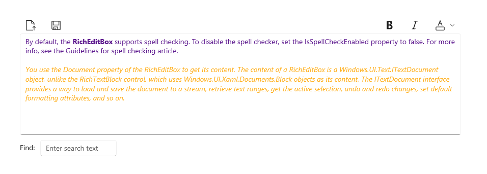

Rich edit box
You can use a RichEditBox control to enter and edit rich text documents that contain formatted text, hyperlinks, images, math equations, and other rich content. You can make a RichEditBox read-only by setting its IsReadOnly property to true.
Is this the right control?
Use a RichEditBox to display and edit text files. You don't use a RichEditBox to get user input into you app the way you use other standard text input boxes. Rather, you use it to work with text files that are separate from your app. You typically save text entered into a RichEditBox to a .rtf file.
- If the primary purpose of the multi-line text box is for creating read-only documents (such as blog entries or the contents of an email message), and those documents require rich text, use a rich text block instead.
- When capturing text that will only be consumed and not redisplayed to users, use a plain text input control.
- For all other scenarios, use a plain text input control.
For more info about choosing the right text control, see the Text controls article.
Recommendations
- When you create a rich text box, provide styling buttons and implement their actions.
- Use a font that's consistent with the style of your app.
- Make the height of the text control tall enough to accommodate typical entries.
- Don't let your text input controls grow in height while users type.
- Don't use a multi-line text box when users only need a single line.
- Don't use a rich text control if a plain text control is adequate.
Examples
This rich edit box has a rich text document open in it. The formatting and file buttons aren't part of the rich edit box, but you should provide at least a minimal set of styling buttons and implement their actions.

Create a rich edit box
- Important APIs: RichEditBox class, Document property, IsReadOnly property, IsSpellCheckEnabled property
The WinUI 3 Gallery app includes interactive examples of most WinUI 3 controls, features, and functionality. Get the app from the Microsoft Store or get the source code on GitHub
By default, the RichEditBox supports spell checking. To disable the spell checker, set the IsSpellCheckEnabled property to false. For more info, see the Guidelines for spell checking article.
You use the Document property of the RichEditBox to get its content. The content of a RichEditBox is an ITextDocument object, unlike the RichTextBlock control, which uses Block objects as its content. The ITextDocument interface provides a way to load and save the document to a stream, retrieve text ranges, get the active selection, undo and redo changes, set default formatting attributes, and so on.
This example shows how to edit, load, and save a Rich Text Format (.rtf) file in a RichEditBox.
<RelativePanel Margin="20" HorizontalAlignment="Stretch">
<RelativePanel.Resources>
<Style TargetType="AppBarButton">
<Setter Property="IsCompact" Value="True"/>
</Style>
</RelativePanel.Resources>
<AppBarButton x:Name="openFileButton" Icon="OpenFile"
Click="OpenButton_Click" ToolTipService.ToolTip="Open file"/>
<AppBarButton Icon="Save" Click="SaveButton_Click"
ToolTipService.ToolTip="Save file"
RelativePanel.RightOf="openFileButton" Margin="8,0,0,0"/>
<AppBarButton Icon="Bold" Click="BoldButton_Click" ToolTipService.ToolTip="Bold"
RelativePanel.LeftOf="italicButton" Margin="0,0,8,0"/>
<AppBarButton x:Name="italicButton" Icon="Italic" Click="ItalicButton_Click"
ToolTipService.ToolTip="Italic" RelativePanel.LeftOf="underlineButton" Margin="0,0,8,0"/>
<AppBarButton x:Name="underlineButton" Icon="Underline" Click="UnderlineButton_Click"
ToolTipService.ToolTip="Underline" RelativePanel.AlignRightWithPanel="True"/>
<RichEditBox x:Name="editor" Height="200" RelativePanel.Below="openFileButton"
RelativePanel.AlignLeftWithPanel="True" RelativePanel.AlignRightWithPanel="True"/>
</RelativePanel>
private async void OpenButton_Click(object sender, RoutedEventArgs e)
{
// Open a text file.
Windows.Storage.Pickers.FileOpenPicker open =
new Windows.Storage.Pickers.FileOpenPicker();
open.SuggestedStartLocation =
Windows.Storage.Pickers.PickerLocationId.DocumentsLibrary;
open.FileTypeFilter.Add(".rtf");
Windows.Storage.StorageFile file = await open.PickSingleFileAsync();
if (file != null)
{
try
{
Windows.Storage.Streams.IRandomAccessStream randAccStream =
await file.OpenAsync(Windows.Storage.FileAccessMode.Read);
// Load the file into the Document property of the RichEditBox.
editor.Document.LoadFromStream(Windows.UI.Text.TextSetOptions.FormatRtf, randAccStream);
}
catch (Exception)
{
ContentDialog errorDialog = new ContentDialog()
{
Title = "File open error",
Content = "Sorry, I couldn't open the file.",
PrimaryButtonText = "Ok"
};
await errorDialog.ShowAsync();
}
}
}
private async void SaveButton_Click(object sender, RoutedEventArgs e)
{
Windows.Storage.Pickers.FileSavePicker savePicker = new Windows.Storage.Pickers.FileSavePicker();
savePicker.SuggestedStartLocation = Windows.Storage.Pickers.PickerLocationId.DocumentsLibrary;
// Dropdown of file types the user can save the file as
savePicker.FileTypeChoices.Add("Rich Text", new List<string>() { ".rtf" });
// Default file name if the user does not type one in or select a file to replace
savePicker.SuggestedFileName = "New Document";
Windows.Storage.StorageFile file = await savePicker.PickSaveFileAsync();
if (file != null)
{
// Prevent updates to the remote version of the file until we
// finish making changes and call CompleteUpdatesAsync.
Windows.Storage.CachedFileManager.DeferUpdates(file);
// write to file
Windows.Storage.Streams.IRandomAccessStream randAccStream =
await file.OpenAsync(Windows.Storage.FileAccessMode.ReadWrite);
editor.Document.SaveToStream(Windows.UI.Text.TextGetOptions.FormatRtf, randAccStream);
// Let Windows know that we're finished changing the file so the
// other app can update the remote version of the file.
Windows.Storage.Provider.FileUpdateStatus status = await Windows.Storage.CachedFileManager.CompleteUpdatesAsync(file);
if (status != Windows.Storage.Provider.FileUpdateStatus.Complete)
{
Windows.UI.Popups.MessageDialog errorBox =
new Windows.UI.Popups.MessageDialog("File " + file.Name + " couldn't be saved.");
await errorBox.ShowAsync();
}
}
}
private void BoldButton_Click(object sender, RoutedEventArgs e)
{
Windows.UI.Text.ITextSelection selectedText = editor.Document.Selection;
if (selectedText != null)
{
Windows.UI.Text.ITextCharacterFormat charFormatting = selectedText.CharacterFormat;
charFormatting.Bold = Windows.UI.Text.FormatEffect.Toggle;
selectedText.CharacterFormat = charFormatting;
}
}
private void ItalicButton_Click(object sender, RoutedEventArgs e)
{
Windows.UI.Text.ITextSelection selectedText = editor.Document.Selection;
if (selectedText != null)
{
Windows.UI.Text.ITextCharacterFormat charFormatting = selectedText.CharacterFormat;
charFormatting.Italic = Windows.UI.Text.FormatEffect.Toggle;
selectedText.CharacterFormat = charFormatting;
}
}
private void UnderlineButton_Click(object sender, RoutedEventArgs e)
{
Windows.UI.Text.ITextSelection selectedText = editor.Document.Selection;
if (selectedText != null)
{
Windows.UI.Text.ITextCharacterFormat charFormatting = selectedText.CharacterFormat;
if (charFormatting.Underline == Windows.UI.Text.UnderlineType.None)
{
charFormatting.Underline = Windows.UI.Text.UnderlineType.Single;
}
else {
charFormatting.Underline = Windows.UI.Text.UnderlineType.None;
}
selectedText.CharacterFormat = charFormatting;
}
}
Use a rich edit box for math equations
The RichEditBox can display and edit math equations using UnicodeMath. The equations are stored and retrieved in MathML 3.0 format.
By default, the RichEditBox control does not interpret input as math. To enable math mode, call SetMathMode on the TextDocument property, passing the value RichEditMathMode.MathOnly (to disable math mode, call SetMathMode but pass in the value NoMath).
richEditBox.TextDocument.SetMathMode(Microsoft.UI.Text.RichEditMathMode.MathOnly);
This enables UnicodeMath input to be automatically recognized and converted to MathML in real time. For example, entering 4^2 converts to 42, and 1/2 converts to ½. See the WinUI 3 Gallery app for more examples.
To save the math content of a rich edit box as a MathML string, call GetMathML.
richEditBox.TextDocument.GetMathML(out String mathML);
To set the math content of a rich edit box, call SetMathML, passing in a MathML string.
Choose the right keyboard for your text control
To help users to enter data using the touch keyboard, or Soft Input Panel (SIP), you can set the input scope of the text control to match the kind of data the user is expected to enter. The default keyboard layout is usually appropriate for working with rich text documents.
For more info about how to use input scopes, see Use input scope to change the touch keyboard.
UWP and WinUI 2
Important
The information and examples in this article are optimized for apps that use the Windows App SDK and WinUI 3, but are generally applicable to UWP apps that use WinUI 2. See the UWP API reference for platform specific information and examples.
This section contains information you need to use the control in a UWP or WinUI 2 app.
APIs for this control exist in the Windows.UI.Xaml.Controls namespace.
- UWP APIs: RichEditBox class, Document property, IsReadOnly property, IsSpellCheckEnabled property
- Open the WinUI 2 Gallery app and see the RichEditBox in action. The WinUI 2 Gallery app includes interactive examples of most WinUI 2 controls, features, and functionality. Get the app from the Microsoft Store or get the source code on GitHub.
We recommend using the latest WinUI 2 to get the most current styles and templates for all controls. WinUI 2.2 or later includes a new template for this control that uses rounded corners. For more info, see Corner radius.